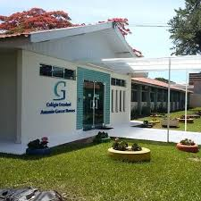

A Prova Paraná e o SAEB utilizam descritores em suas provas. Cada descritor é responsável por "guardar" um determinado assunto. Se você quer garantir aquele notão no seu boletim, explore algumas dessas explicações sobre os descritores mais cobrados na prova!
Nós somos Lívia, Maria e Gaby, alunas do 2° ano do EM, estamos no itinerário de exatas e desenvolvemos esse projeto na nossa disciplina de programação com orientação do professor Miderson.
Uma curiosidade sobre o cólegio Garcez é que ele iniciou seu funcionamento como colégio em 1969, não como conhecemos hoje, mas com os primeiros passos para se tornar o colégio que é atualmente!
para saber mais do colégio, clique aqui e veja as informações do IBGE 